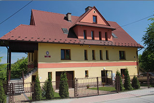
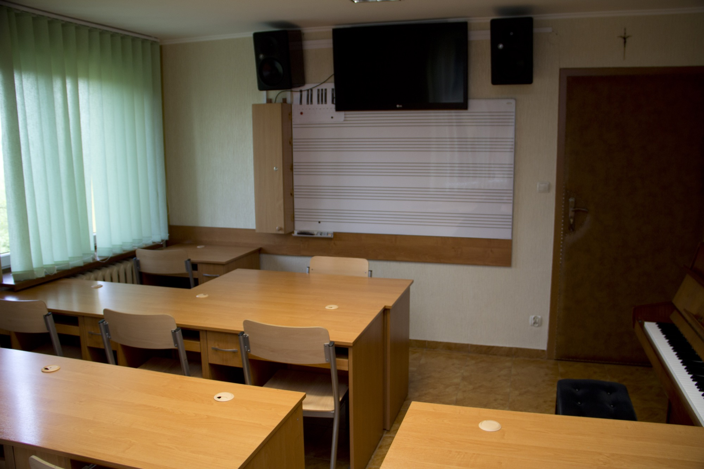
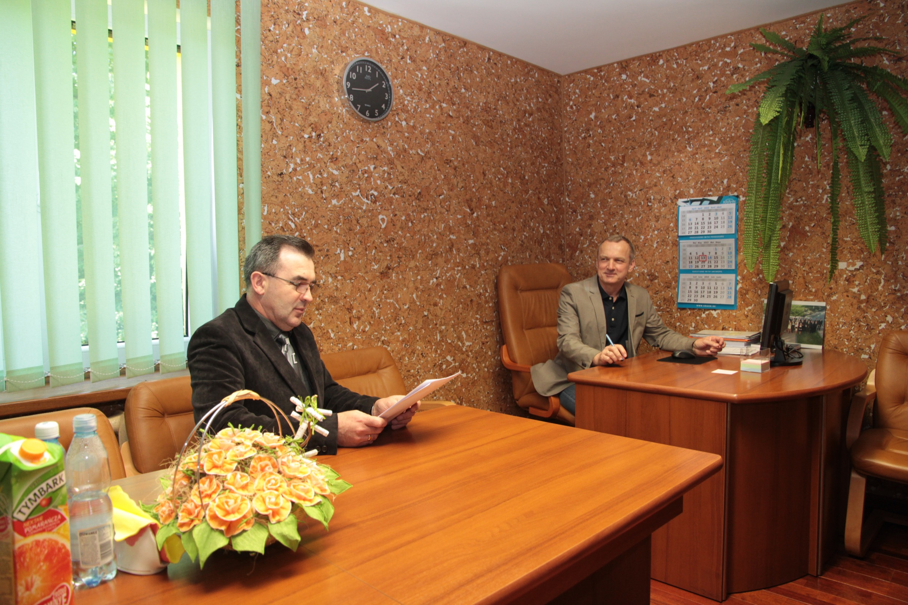

Szkoła Muzyczna
w Sobolowie
Szkoła Muzyczna I Stopnia w Sobolowie została założona w 2010 roku. Jej powstanie było wynikiem współpracy władz lokalnych, instytucji kościelnych oraz społeczności muzycznej. Na prośbę Wójta Gminy Łapanów, Pana Jana Kuliga, skierowaną do ówczesnego Ministra Kultury i Dziedzictwa Narodowego, Pana Bogdana Zdrojewskiego, podjęto decyzję o utworzeniu szkoły. Jej powołanie zostało zatwierdzone uchwałą Rady Gminy Łapanów.
Nieoceniony wkład w organizację szkoły wniósł ks. Stanisław Jachym, proboszcz parafii pw. Wszystkich Świętych w Sobolowie, a także Pan Stanisław Chmielek – organista oraz kapelmistrz Parafialno-Gminnej Orkiestry Dętej w Sobolowie, który bezpośrednio zaangażował się w proces tworzenia placówki.
Początkowo większość uczniów stanowili członkowie Parafialno-Gminnej Orkiestry Dętej z Sobolowa. W 2014 roku pierwsi uczniowie ukończyli szkołę jako dyplomowani muzycy. Obecnie szkoła oferuje edukację w klasach takich instrumentów jak: flet, klarnet, saksofon, sakshorn, waltornia, trąbka, puzon, tuba, perkusja, fortepian, akordeon, skrzypce, kontrabas, gitara klasyczna oraz wokal rozrywkowy.
Stanisław Chmielek, pełniący obecnie funkcję menadżera szkoły, przywiązuje szczególną wagę do rozwijania sekcji instrumentów dętych i perkusyjnych, które odgrywają kluczową rolę w orkiestrach dętych. W 2011 roku, za zgodą Ministra Kultury i Dziedzictwa Narodowego, wprowadzono do programu nauczania sakshorn jako instrument dodatkowy. Dzięki staraniom dyrekcji, od 2015 roku sakshorn stał się pełnoprawnym instrumentem głównym, powracając do ramowych planów nauczania po niemal czterdziestu latach.
W odpowiedzi na rosnące zainteresowanie różnorodnymi formami edukacji muzycznej, w 2014 roku utworzono klasę wokalu rozrywkowego. Był to projekt eksperymentalny, który szybko zyskał popularność i do dziś cieszy się dużym zainteresowaniem wśród uczniów.
Szkoła Muzyczna w Sobolowie dysponuje nowoczesnymi i dobrze wyposażonymi przestrzeniami dydaktycznymi, młodą i dynamiczną kadrą pedagogiczną oraz solidnym zapleczem instrumentalnym i technicznym. W 2013 roku, dzięki dotacji programowej Ministerstwa Kultury i Dziedzictwa Narodowego, przygotowano projekt budowy nowej sali koncertowej. Rok później uzyskano prawomocne pozwolenie na jej budowę.
Władze szkoły dążą do zdobycia środków finansowych na realizację budowy sali koncertowej, która znacząco poprawi warunki do organizacji koncertów i innych wydarzeń muzycznych. Projekt ten stanowi kluczowy element strategii rozwoju placówki, która wciąż wychodzi naprzeciw potrzebom lokalnej społeczności oraz młodych muzyków.